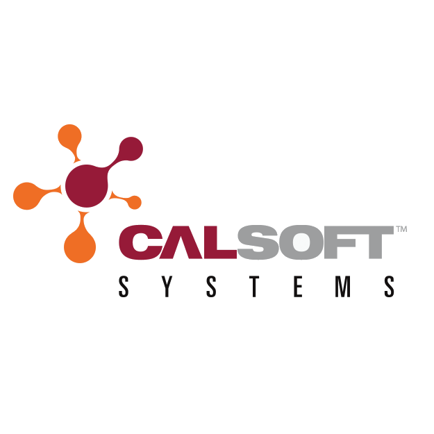
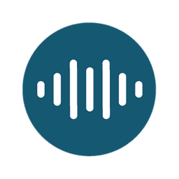
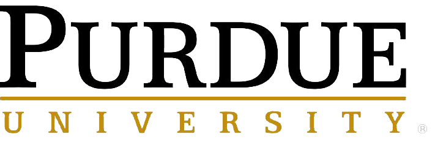

Employment
-

- Calsoft Systems
- Implemented Azure DevOps for source control and team resource management and encouraged DevOps practices for software development
- Developed custom applications and extensions to integrate client's individual and unique requirements into exsisting Microsoft Dynamisc 365 products
- Reviewed, analyzed and modified programming systems to support an organization's ERP applications
- Travelled to client sites to interview for current system functionalities and present D365's capabilities in enhancing operations
- Lead discussions on how to improve efficiency of client's operation with the new system and easing the transition from the older system.
- Sound Life Sciences
- Collaborated across a multi-disciplinary team of engineers to define and derive product specifications
- Integrated Off-The-Shelf products to build a prototype speaker
- Designed a proprietary Printed Circuit Board to allow for backup power supply in the event of a power outage
- Developed Python code to initiate system shutdown in case of loss of power
- Built cloud pipeline from Raspberry Pi to Particle Cloud for data transfer
- Enabled storage of uploaded data from Particle Cloud to Google Sheets
- Draeger Safety Diagnostics Inc
- Kick-started Autonomous Drone project to aid monitoring of gases in hazardous environments
- Studied Federal and State regulations of drones to enable research into feasibility of the product
- Used Python to develop algorithms for Drone prototype on Raspberry Pi and C# to connect Pi to PC using Bluetooth
- Discovered patent infringements by a competitor during competitive study of company’s products versus competitors’
- Purdue University
- Taught students MS Excel and MATLAB for data manipulation and processing
- Provided expertise on coding practices to encourage documentation of logic and purpose
- Created work-like environment to encourage development of teamwork and delegations skills
- Enabled collaboration by pushing the idea of paired programming
- Provided coding questions that address real world problems in MATLAB
- Testing and provided feedback new examination system
- Aided formation of testing rubric

